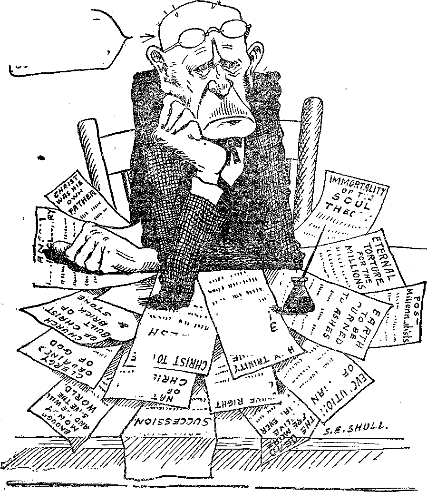

It
y.
WRLD DYING
OMINOUS SIGNS
OF UNREST
PANAMA IS A PROFITABLE BUSINESS
~BLOSSOMING
RIO GRANDE
' WHY ARE WE SICK?
THE DAWN OF
A NEW DAY
'5$ a copy — $ 1.00 a Year Canada and Foreign Countries $ 1.50
Vol. VI Bi-Weekly No. 145
April 8, 1925
^NEV'
VORLD, BEGINNING
MSI..................................—
Labor and Economics
Wage Reductions Produce No Boom
Standardization of Office Work
Carpenters and Joiners Raise Own Oranges
Greater Distribution of Wealth
Incredible Meanness to Immigrants
Social and Educational A Mother With a Career
Economies at the White Hou si:
Finance—Commerce—Transportation
Panama, Uncle Sam’s Most Profitable Business . ... . . 419
The Republic of Panama . . . .
Political—Domestic and Foreign Ominous Signs of Unrest .....
A Word About Honey ................. 432
Travel and Miscellany A Blossoming Desert—The Rio Grande Valley ....... 431
Religion and Philosophy
Brother 10 the Chimpanzee (Cartoon)
Thoughts From One of Wesley’s Colleagues ...
Distribution of the Indictment in Switzerland ....... 438
The Dawn of a New Day ................ 442
Published every other Wednesday at 18 Concord Street, Brooklyn, N. Y„ U. S. A., by WOODWORTH, HUDGINGS & MARTIN
Copartners and Proprietors Address: 18 Concord Street, Brooklyn, N.Y,, U.S.A. CLAYTON J. WOODWORTH . . . Editor ROBERT J. MARTIN . Business Manager
WM. F. HUDGINGS . . See’y and Treas. '
1 Five Cents a Copy—$1.00 A Yeah Make Remittances to THE GOLDEN AGE,
I Foreign Offices ; British . .... 34 Craven Terrace, Lancaster Gate, London W. 2
| Canadian 38-40 Irwin Avenue, Toronto, Ontario
Australasian 495 Collins Street, Melbourne, Australia
South African ...... 6 Lelie Street, Cape Town, Sg.uth Africa
Entered as second-class matter at Brooklyn, N. Y., under the Act of March 8, 1873
Volume VI Brooklyn, N.Y., Wednesday, April 8, 1925 Number 145
Panama Uncle Sam’s Most Profitable Business
THE Panama Canal is Uncle Sam’s most profitable business. The whole cost of running the canal, including all items of construction, maintenance, operation, fortification, and interest on loans, amounts to about $8,000,000 per year; but the tolls collected from vessels passing through the canal amount to more than twice that sum.
The tonnage which passes through Panama is more than a million tons annually in excess of that passing through the Suez Canal. Indeed, a considerable portion of what once passed through Suez now finds a shorter and better route via Panama.
From the eastern part of the United States there go to the western coast of North and South America and to Australasia, manufactured goods of all kind, coal and cement in vast quantities; while from those regions to the East there comes a steady flow of fuel oil, nitrates, wheat, wool, phosphates, cocoa, coffee and nuts.
It is believed that the canal can ultimately carry four or five times the traffic which is now passing through it, and that the necessary enlargements and deepening can be done out of the tolls. It may sometime be cut down to sea level, which will be eighty-five feet lower than at present. The expense of doing this is roughly estimated at a billion dollars.
A Brief History of Panama
OLUMBUS landed on the isthmus of Panama in 1502; but it was not crossed until
eleven years later, when Balboa planted his flagstaff in the waters of the Pacific and claimed on behalf of Ferdinand and Isabella all the lands that bordered upon its shores, all of North and South America, Asia and Australasia! Spain was stripped of the last of these nds when she lost the Philippines, and some of them she never did get anyway. The city of Panama was colonized before 1520.
In the year 1550 a Portuguese navigator, Antonio Galvao, suggested to the king of Spain that a canal be cut through the isthmus. But the idea was rejected; and in order to make sure that the rejection would be final, the death penalty was prescribed for anybody who should reopen the matter.
Nevertheless, the great explorer and naturalist Humbolt mapped five routes for such a canal, one of them following closely the lines of the present ditch; and Spain had at last determined to begin the work, when the country was snatched from her control in 1821.
Colombia revolted from Spain in 1819; and two years later the province of Panama cast off the yoke, and threw her lot in with the country which had controlled the isthmus up to 1904. From that time onward, history was made rapidly, at least as far as the canal is concerned.
The French had obtained the consent of the Colombian government to build a canal, and work was begun in 1879. But the country was warm, damp and extremely unhealthy; the machinery was inadequate and deteriorated rapidly; the workers died like Ilies; and little progress was made.
Nineteen years later the Spanish-American war was fought; and Spain had such a superior line of cruisers that at the time it was believed necessary to bring the American battleship Oregon all the way around from the Pacific Coast to the Atlantic Coast in order to protect American shores. President Roosevelt decided that such an emergency must not happen again, and that America must build a canal across the isthmus.
How the Canal TFas Begun
IN 1904 the United States government paid the French company $40,000,000 for their rights, and was about to proceed with construction when the Colombian government refused tq ratify the French-American transaction. Uncle Sam made proposal after proposal to the Colombian government, -without result.
-.13
Whether or not Mr. Roosevelt actually engineered what followed we may not know; but it seems not unlikely in view of what we now know of the secret agreement which he made with Japan to give them a free hand in the seizure of Korea, provided that they would keep out of the Philippines. .
Anyway, the thing that happened, -whether Mr. Roosevelt planned it or not, is that the province of Panama suddenly revolted from Colombia, declaring itself a republic, and when the Colombian government wanted to send troops to quell the revolt they found United States battleships standing in the way, and were forbidden to make a landing;. The rest was easy.
The Republic of Panama ceded a canal zone to the United States for the sum of $10,000,000 and a further annual payment of $250,000. Work was begun in 1907. All the towns and cities of the zone were provided with first-class sanitation, tropical fevers disappeared, greatly improved machinery was at hand, the work progressed rapidly in spite of landslides and torrential rains and was finished in 1914.
To mollify the feelings of Colombia she has been given $25,000,000, paid in five annual installments of $5,000,000 each, as compensation for the loss of sovereignty over the isthmus. Senator Borah, of the United States Senate Committee on Foreign Affairs, declares that there is nothing in the record to show that the United Sates was in any way obligated to pay this sum, as it did not participate in, aid or abet the Panama revolution.
That may all be; but it can also be said that the United States did nothing to discourage it, and did do a plenty to discourage Colombia from trying to regain control of what was her principal asset. Colombia’s $25,000,000 was not all clear velvet; for it is reported that some of our patriots who were eager to pay it to her have found a way to get some of it back in oil concessions. We have many such.
The Republic of Panama
HpHE Republic of Panama, is an expression -®- that looks well on paper. If there is a bigger farce in the way of a government anywhere on earth, wrn do not know where to look for it, except at the Vatican. The most we can say of either of them is that they are unscrupulous political cliques.
A law is in force in the Republic of Panama which establishes that every citizen must- have a voting certificate before he can exercise the : right to vote. But the law requires that before \ one can have a voting certificate he must have ' an official photograph; and as there are no pho- ■ tographers in the rural districts, a large part : of the citizenry is automatically excluded from participation in the annual $250,000 from. Uncle Sani in which the patriots proper of Panama are specially interested.
Then, if they live in the cities, the common people find, after they have obtained their voting certificates, or after they have obtained the right to them, that the government insists on their custody, for fear these will be lost, and that when election day comes around, the only certificates that can be located are those of the • friends of the party in power, the regular patriots.
The outcome of this arrangement is that in the last presidential elections, although the population of the country is 442,522, the winning candidate received only 20,000 votes; w’hile in one district, which has a population of 6,623, only 14 votes were cast in the entire district. The United States government guarantees the independence of Panama in perpetuity.
The little country of Panama is 480 miles long, with a width of 37 to 110 miles. About half the country is occupied, with a mixture of Indians, Spanish and Negros, and some Americans, Germans and French. Bananas, caoutchouc, coffee, nuts, mahogany, sarsaparilla, ipecac, pearls, and tortoise shells are exported to some extent ; but although the soil is fertile to an unusual degree yet it is rarely tilled at all. The city of Panama has 30,000 population.
The Canal Itself .
THE canal has been often described, but we will repeat a little of what has been said. -.........
The isthmus of Panama is so crooked that the eastern or Atlantic end of the canal is farther west than the western or Pacific end of the canal. This is a case of where east is west and io east. The general direction of the cut from the Atlantic to the Pacific side is to the southeast.
Moving from deep water on the Atlantic side, the canal extends at sea level from its starting point in Limon Bay for a distance of six miles to the Gatun locks. These are three in number, each a thousand feet long, and lift the level of the canal eighty-five feet to the level of the Gatun lake'.
The canal proceeds through the lake and up the valley of the Chagres river about twenty-one miles to the famous Culebra cut, where the real drive through the divide was made. The Culebra cut is seven miles long, 300 feet wide at the bottom, and extends to the Pedro Miguel lock and dam on the Pacific side. A mile farther the Miraflores locks lower the canal to the level of the Pacific. The depth of the canal channel is forty-one feet, its length forty-three miles. The canal is leased for one hundred years, with right of renewal.
All the locks in the canal are double, so that vessels going in one direction do not in any way retard the progress of vessels bound in the opposite course. There are now about fifteen vessels a day passing through the canal. They are at present limited to daylight passage only, so as not to interfere with the dredging operations which are constantly in progress.
A N INTERESTING neighbor of the Panama
Republic is what might not improperly be called the Republic of San Blas. On the maps the San Blas islands, or the Archipelago de las Mulatas, as they are sometimes called, are shown as belonging partly to Colombia and partly to Panama. Actually the people, 30,000, who live on those islands, recognize the sovereignty of nobody but themselves.
Although they live near' one of the world’s greatest highways, the San Blasians refuse to have anything to do with whites, considering, not improperly, that they are a bad lot. Their tribal customs have not changed in four hundred years, since the Spaniards first visited them; and their language is the same now as then, a language void of verbs.
San Blas women wear clothes, and are fond of them; but the rule of the country is that the only way little brother can get any clothes is to earn them. Until then, he wears nothing but his birthday suit. The men and the women of San Blas are noted for their high morals. Transgression of the law of chastity is visited by swift and sudden death.
[Radiocast, with other items, from Watchtower WBBB on a wave length of 272.G meters, by the Editor]
Wage Reductions Produce no Boom
HE Annalist, of New York, calls attention to the fact that the ten-percent wage reductions in the Fall River textile mills have not produced fuller -employment, and sagely remarks that if these reductions spread to Rhode Island and other parts there is no reason to believe that they will increase the purchasing power of the workers. Sounds like horse sense.
The Passing of the Actor
EFORE our very eyes the actor is passingout of existence. Many things have combined to bring him to an end. One important thing was the advent of the movie, but even with that there was still a limited field for him. But the movie and the radio together are too much. The old-time actor and the horse-shder are in the same class, and the old-time preacher and doctor are headed in the same direction.
Carpenters Raise Own Oranges
HE carpenters and joiners are raising their own oranges. The Brotherhood owns and operates a 1700 acre orange grove at Lakeland, Florida, from which there were recently shipped 55,000 boxes of the luscious fruit to carpenters and joiners in all parts of the country. The oranges had a sure market, and were much appreciated. Not a bad idea.
Jazz is Played Out
A7T7 is played out. The broadcasting station WEAF declares that out of 54,000 letters received in January there was abundant evidence that the demand for jazz has passed, and that there is a marked demand for higher class music. This is good to hear. It is impossible to think of jazz as music. The best that can be said of it is that it is immorality, dishonesty, insanity and anarchy in the realm of sound.
STANDARDIZATION of office work is impending. The United States Chamber of Commerce is working to that end. The warehouse interests have adopted a set of fifteen forms by means of which all their transactions may be handled. When a warehouse clerk has learned the use of these fifteen forms, he can be shifted anywhere. Cost accounting is undergoing a similar standardization. It is bound to spread to every branch of office work.
TWELVE years ago Mrs. William Laimbeer, of New York, was made a widow by an automobile accident. Her husband had been a reasonably successful stock broker. Mrs. Laimbeer started in business to provide for her three children. In twelve years she worked her way up from one position to another until she has become the manager- of the "Woman’s department of the National City Bank, a position approximately equal to that filled by her husband.
Conditions Bad Enough as Respects Crime
CONDITIONS in the United States are bad enough when the annual cost of the crimes committed is more than the total cost of running the national government. And yet that is the claim now made. Six billion dollars annually to stock swindlers, two and one-half billion dollars taken in holdups, and one hundred million dollars in forgeries are among the items.
Hurrah for Warden Smith!
WARDEN Frank J. Smith, of San Quentin Prison, California, has instituted in the prison a regular four-year high-school course, including all the subjects usually taught in high schools. Prisoners who complete this course will be awarded diplomas, and on leaving the prison may enter- the University of California without entrance examinations.
Now That Christmas is Past
WITH rare courage the North Westchester
Times says that the business of giving gifts to people whom you suspect of a purpose to give something to you, has gone so far in perfunctory and generally unwilling barter and exchange that the original sentiment of Christmas giving has been almost extinguished, and it really looks as if the only way to redeem Christmas is to make it a day when everybody shall give to somebody who can not possibly make a return gift.
QOME of the things which go to make up a mere electric-light bulb are copper, mica, wool, cotton, resin, alcohol, marble dust, arsenic, soda, calcium lime, lead, nitre, cobalt, nickle, molybdenum, cryolite, bismuth, sodium carbonate, tungsten, tin, shellac, cork, pyrites, manganese, potash and feldspar. These things come . from every one of the six continents of the globe, and from every climate from Greenland tc Chile inclusive.
HPHE common people of America are investing more and more heavily in the industries of the nation; and this is not a bad sign. It shows that the wealth is being more generally distributed. Since the opening of the twentieth century, the total number of stockholders ia all industries has increased from four and one-half millions to fourteen and one-half millions, while the average holdings per stockholder are only about one-third as much.
17,740,000 Automobiles in America
THERE is now an automobile for every seven persons in the United States. The automobiles in other lands are negligible by comparison. Four-fifths of the world’s output are in use on our own highways. It is no wonder, under the circumstances, that constantly greater efforts are being made to insure some way against the frightful toll of deaths which they exact.
Pelicans in Nevada
SINCE time immemorial a large colony of white pelicans has nested on Anaho Island, Pyramid Lake, Nevada. The colony of these ungainly birds now numbers about 10,000. An investigation of the habits of these most expert of fishers reveals the fact that they live almost exclusively upon coarse and common fishes not used as food by man, and hence they do no damage.
BRING twenty-one days of the month of August, 1924, the automobiles of the United States consumed as much gasoline as was con
sumed by all the automobiles of Great Britain during the entire year of 1924. There is no fuel debauch in history which can equal the way in which America has been wasting her su~ ly of hydrocarbons.
ORD’S fortune is increasing rapidly because nothing goes to waste around the Ford
ing up the power house for thirty minutes just as the people of Greater New York were starting for work. It was about half a day before the traffic situation of the great city became normal.
LORIDA is contemplating a ship canal. The location is not decided, and the canal itself
plants. The slag from his furnaces is turned into Portland cement. The waste from his hard woods U turned into pitch, creosote, wood alcohol, acetate of lime, and charcoal. The broken pieces of plate glass go to the mirror companies. The metal junk brings large returns. The bigger his business gets, the more fortunes he makes from the by-products.
IN JULY, 1920, Henry Ford bought the Detroit, Toledo and Ironton Railroad for $5,000,000. Turing the past two years his net profits from the railroad exceeded $4,000,000. For thirty years previous the road had been continuously in the hands of receivers. In four years the traffic over the road has almost trebled. The traffic consists largely of Ford coal and Ford machines and parts.
NTIL the traffic reaches a certain point, a single track line of railway can get along
has not been agreed upon, but enough is known to show that there are no serious difficulties in the way. There is a string of lakes and rivers between Tampa and Jacksonville, and the building of such a canal would save almost 1500 miles on the vessels to and from all that part of the United States lying along the shores of the Gulf of Mexico.
VERYBQDY knows that Galveston is by the sea. They remember the time when the
waters of the Gulf of Mexico were blown over the city and the town was devastated, with many thousands dead. But it will surprise some to know that Houston, fifty miles inland, is connected by river with the sea; and that the river has been dredged until it is navigable. Houstonians have recently brought this to the attention of the world by announcing that the ship Lafayette, the largest passenger steamer ever put into Gulf waters will now make Houston its home port.
EW YORK city harbors some of the meanest people alive. Knowing that most
very well, but doubling the tracks enables a system to operate four times as many trains. ‘The Atlantic Coast Line has now reached the point of saturation, and will at once doubletrack its main line the whole length from Richmond to Jacksonville.
Rat Ties up Million People
THE most expensive rat in history went up in vapor the other morning, as a result of chewing the insulation on one of the generators in the Interborough Railway Company’s main power house. All he got for his trouble was a charge of 120,000 kilowatts; but he was the means of short-circuiting the generator and ty-
aliens who have accumulated a little m o n e y must pass through New York on their way back to Europe, these villains gather here and by every conceivable method of chicanery persuade or frighten or force returning aliens to give them all or part of their savings. This is largely done through pretended legal or official connections or methods. The Department of Labor maintains a Division whose business it is to run down these frauds.
OR cruelty to a dog a Niagara Judge fined four men $200 each and sentenced them to
180 days in the county jail. The chances are that
this judge does not believe, and could not believe, that any being having the power to do so would ever be cruel to men for ever and ever without any mercy or any let-up. The unscrip-tural doctrine of eternal torment is a dead one.
What a Radio Fan Did
A RADIO fan in Pittsburg made the mistake, accidentally no doubt, of connecting his receiving set to a water pipe to which a telephone wire had also been grounded. The astonishing result followed that when one of the telephone subscribers went to use her phone the other day, in came the radio concert assuring her, “It aint gonna rain no mo.” Other subscribers in the same district reported the same trouble.
The Electrical Horse
THE old-time flesh and blood horse is nearly gone. Once in a great while one may be seen, looking quite out of place on a highway crowded with automobiles. The old-time horse was useful as an exerciser. But now for about $700 a man can get an electrical horse, fitted with trot, gallop, canter and other movements, and take his horseback ride indoors, all for the expenditure of a few cents a day for current. The President has such a horse.
Poor Lights are Expensive
THE Eye-sight Conservation Council has made an analysis of 91,000 accidents, and finds as a result that about 100,000 workmen are lost to industry each year because of inadequate or improper lighting. These men thus lose about 30,000,000 days of work; and industry as a whole is set back about $300,000,000, which must be borne by those who do work.
Tetrophan Cures Locomotor Ataxia
ANEW drug, tetrophan, discovered by a German scientist, is claimed to effect the cure of locomotor ataxia. Professor Oscar Foerster of the Univesity of Breslau, Germany, reports that in every instance where this drug has been given by him to these sufferers they have completely recovered the use of their limbs.
When Vaccinations do not Take
A HEALTHY body in normal function can not show manifestations of disease; and when vaccine is deposited into such a body, it is eliminated the same as any other poison or waste thing. But by repeated efforts so much poison can finally be thrown into the blood stream that the blood is unable to neutralize it: and then the vaccination will take.
Reverend Dr. Norris Slams the Clergy
TN AN address to the Baptist Bible Union of -®- America Rev. Frank Norris, of Fort 'Worth, whose congregation is said to number 8,000, declared that the average young preacher of today has “a smattering knowledge of every- t. thing in the world except the one book he is to V teach and preach. A hungry, sinning, suffering ! world comes to church and asks for bread and ' receives a stone, the latest researches of science, the findings of modern scholarship.” Rererend ' Norris ought to know. If he could not tell, who could?
Cathedral Causes Heartburnings
THE drive for $15,000,000 to complete the
Cathedral of St. John the Divine, being built in New York city by the Protestant Episcopal Church, is causing some odd situations. Charles M. Schwab, a Catholic, is head of & committee raising funds in the iron and steel trades. Mayor Hylan, also a Catholic, gave $100 toward the fund. The Jesuit paper America accuses them of what it styles “'Heresy, ever the ape of God.” One of the contributors to the fund is John D. Rockefeller, Jr., a Baptist, who gave $500,000, with the understanding that $75,000 should be applied to the oil division of the cathedral drive. Wouldn’t there be room for Messrs. Sinclair, Doheny, and Fall to get into the oil division?
mHE following article was clipped from “CapA pen’s AVeekly” of August 9, 1924:
“A career and marriage may be combined to a certain extent. I am married, the mother of four small children; yet I have returned to teaching. Money is scarce, and housework is hard for me. I have hired a woman, who cares for the children and does the housework. It gives me more time for my family, and I am not so tired. I have time, also, to keep myself looking attractive. When I was doing the housework, I was too tired to care how I looked; and I never had any time for my family.
“I earn $125 per month, and pay the woman $1 per day. She is a good housekeeper, and is a mother to my children. I now have money for things I could scarcely dream of before. Besides, I have more liberty, as the woman cares for the children while I go out with my husband or call on my friends. We have so many good times together that neither my husband nor my children object to my career.”
This teacher is admittedly doing work which is much easier and pleasanter than that of the woman who cares for her home. She works from six to eight hours per day. Her housekeeper puts in from ten to fourteen hours daily. She gets $6.25 for her day’s work. Iler housekeeper gets $1 per day and board. Doubtless she would plead superior training and intelligence as the reason why she should be thus favored. But did it not take years of training and considerable mental ability to make of the other woman so successful a homekeepcr and mother for four young Americans not her own ?
We are not censuring the teacher. We would feel the same about these things had we had the same training; but she has bared a stern fact. Either the teachers, in our rural schools especially, are getting too much, or else the men and women who slave to make the homes what they should be and to keep these schools going, are not getting enough.
This teacher is one of a union of teachers who, puffed up by a mistaken estimate of their own importance, are setting the prices the public must pay. The teachers are not alone, however, in seating themselves in the upper seats. We look for a great shifting of positions when the Master of Earth takes full control and when this great social structure which is built upon the sands of selfishness'and which even now is tottering, falls.
( ^'V' E BLIND guides! which strain at a gnat, J*- and swallow a camel.”—Matthew 23: 24.
The ancients drank their vane from open bowls, and it was often, necessary to strain the wine through a cloth to remove the gnats which got into the liquid. The literal rendering of our text is: “Ye filter out a gnat, and gulp down a camel.” ■
The scribes and Pharisees, painstaking as they were in regard to some trivial details of religion, could gulp down camels, hump and all; and the camel, remember, was pronounced by the Levitical law as unclean for food.—Lev. 11:14.
The gnat-strainers and camel-swallowers are by no means an extinct tribe. We have religious leaders today who strain out the supernatural from the Bible because the miracles are contrary to human reason. Yet they can turn around and swallow the camel of Darwinism without choking to death.
Here are some samples of what is taught in our school books, statements which some of our broad-minded brethren swallow with relish, as doing less violence to reason than the teachings of the Word. Prof. D. AV. LaRue, in his “Psychology for Teachers” says:
“We are all descended from a simple, wormlike creature. The segments of our backbone are memorials of the segments of its body.”
Equally interesting is the statement from page 97 of Simmons’ “Practical Psychology”:
“At one stage of evolution, the duck’s foot was not webbed; but several thousand years back he decided to live in the water. Whereupon he began to desire and eventually evolved a foot adapted to swimming. The crane got his long legs because he wished to wade. The beaver developed his broad trowel-like tail because he wished to erect a dam. Man got his hand because he wished to become a builder, and Iris frontal brain development because he wished to become a thinker.”
A learned professor taught the young folks of Philadelphia:
“Evidence that early men climbed trees with their feet lies in the way we wear the heels on our shoes—• more at the outside. A baby can wiggle its big toe without wiggling its other toes, an indication that it [sic] once used its big too in climbing trees. We often dream of falling. Those who fell out of the trees some fifty thousand years ago and were killed, of course, had no descendants. Those who fell and were not hurt, of course, lived; and so we are never hurt in our dream? of falling.”
Our children come home from school, says Mr.
Bryan, and tell us that there was a time when eyes were unknown. They just happened. A freckle appeared upon the skin of an animal that had no eyes. This freckle converged the rays of the sun upon that spot; and when the little animal felt the heat on that spot, it turned the spot to the sun to get more heat. This increased heat irritated the skin, and a nerve came there, and out of the nerve came the eye! But th s only accounts for one eye; there must have bee.' another freckle soon afterward, and just in tin right place in order to give the animal two eyes.
Furthermore, there was a time when animals had no legs, and so the leg came by accident. A little animal without legs was wiggling along on its belly one day, when it discovered a wart. It just happened so. The -wart was in the right place to be used to aid in locomotion; the animal came to depend upon the wart, and use finally developed it into a leg. Then another wart; and another leg, at the proper time—by accident— and accidently in the proper place.
Come, come, gentlemen. Don’t you occasionally have little choking spells trying to swallow this? How come you to make such a fuss about Jonah being swallowed by a sea monster?
Is the World Crazy? By a. m. Merrill, n. c.
SOME sincere writers on sociological questions approach remarkably close to the sore spot of the world’s problem. They recognize selfishness to be this sore spot, a selfishness that is intensified by the increasing stress and competition of our day. But having gone this far they start back appalled at the magnitude and the irremediable nature of the problem, as if they had come to a precipice and could see no bottom. They go to the jumping-off place, and then fail to jump. They instinctively realize that the solution of the problem lies without the scope of human power; and since they know nothing of the impending Divine intervention, they turn way from the subject and discuss lighter matters.
Is the world insane? There are strong evidences that it is. The worship of an unholy trinity of gods—Mammon, Jazz, and Evolution —surely indicates insanity. True, there are many great activities that are being conducted in a wonderfully efficient way. But experience teaches us that many insane persons are uncannily shrewd on some one subject. Is not insanity chiefly manifested in the deification of Darling I? Note that the chief incentive to Mammon worship is self-glorification.
Observe the pabulum upon which the minds of the people are being fed night after night in the moving-picture houses. One would naturally presume that the scenarios were prepared for the entertainment of feeble-minded children and sexual neurasthenics.. Tawdry melodrama is the chief factor. Mellow drama is right; for it is mellow even unto rottenness. The inevitable amorous clinch of the hero and heroine, an in
decent exhibition of affection even between a married couple, crowns the evening’s entertainment ! ‘
When I was a student at a Chiropractic college, we occasionally had a lurid assortment of lecturers. I recall one who presented a philosophy which has an increasing number o f adherents. This lecturer urged us to cultivate the power of controlling others. According to his theory, others could with equal facility learn to control us. Of course, in an age of Mammon, Jazz, and self-deification, it would be absurd to suggest that each one sought to control himself!
Some time ago the Legislature of Oklahoma enacted a law forbidding the teaching of evolution in any public school of the State. The Legislature was assailed by the daily press as fanatics who had returned to the methods >>f the dark ages. The writer made an effort to defend the Legislature, but had no luck trying to break into the daily press, although he has spent the greater part of his active life in the newspaper game. The evolutionists, having taken up their abode in glass houses, proceeded recklessly to throw stones. I know of at least one high school in which the facufty ignore this law; and only one member of the student body, a young Bible Student, undertakes to refute the ridiculous theory. I have reason to believe that the law is generally disregarded. These wise leaders of education are of course horrified by the disposition of many of the common herd to ignore certain laws which have the approval of our “very best people”.
THERE are hvo things that stand always in way of man’s progress: Reaction and indifference. Of the two, indifference is the harder to overcome. Just as it takes more power to start a heavy train, to overcome the inertia of the mass, than it does to run the train once started, so it takes tremendous effort to arouse the interest of the indifferent and to gain their intelligent support to measures designed for their benefit, though the interest once aroused is sufficient to carry the matter to a triumphant and successful conclusion.
Many of us are familiar with Millet’s famous painting, “The Man with the Hoe,” a picture of the bowed figure of a peasant wielding a hoe in the field, but bearing on his face that mixture of expression that comes from ages of oppression, sullen acceptance of the lot of a serf, with an undertone of suppressed rage waiting to be unleashed. Men have gazed at that face, and have speculated if indeed it conveyed a message to this our day; if sometime the ability to carry the tremendous load of repression and servitude would be taxed beyond endurance, and a terror be unloosed upon the world that would destroy for all time the tyranny and overlordship of the few over the mass.
Mr. Lloyd George, in a speech in Scotland, said:
“Political economy is not such an intricate science as its professors would have us believe. It is all summed up in one inspired phrase, ‘Whatsoever a man soweth, that shall he also reap.’ The world sowed destruction, slaughter and havoc; and it must reap poverty, privation, sorrow and suffering.”
Everyone knows that these four conditions are the breeding-ground of what we are pleased to term Bolshevism, the anarchistic spirit of hatred of all existing forms of repression with violently expressed demands for redress of age-old wrongs.
A knowledge of the same situation moved Gustav Le-Bon to write a book which he called “The World in Revolt”, and in which he declared that the world is passing through an “era of dissociation and hatred of all kinds of authority or control”.
Dr. G. Stanley Hall writing in the “Century” says:
“Not since the fall of the Roman empire, or at least since the Thirty Years’ War, which swept away one-third of the population of Europe, has the western
427
world faced so many troubles or had so many prophets of disaster as at present. Besides the loss of ten millions of her best men slain in the war, twenty millions wounded, and the suffering and death of many others at home which this entailed, there have been incalculable property losses, enormous debts (some of which can never be repaid), paper currencies depreciated beyond redemption, and widespread disintegration of industry and trade. . . . There is also a new spirit of independence in India, Ireland, Egypt, Poland, and a dozen more nations down to poor Armenia, with a new race consciousness in the American Negro.”
Again quoting from Lloyd George’s Scotland speech:
“The world is poor; that’s the trouble. You have spent fifty-five billion dollars on the war, and the whole world is poor. You must remember that it is the world that buys, as well as sells. It is no use saying that the need is greater than ever. If you judge a customer that way, then a tramp will be a much better customer for Sauchiehall Street [a busy shopping district in Glasgow, where this speech was made] than our chairman. The need is greater, but the means are less. The world is in rags, and it has got to travel many weary, weary miles before it gets back to where it ■was before the war.”
This all goes to make the picture gloomy, hut doesn’t present much of a solution of the difficult problem.
Decadence of Superstitious Worship
OR many years, centuries in fact, the waters of truth have been percolating down through
the masses of the people; education, once the most despised and neglected of benefits for the common herd, has taken a tremendously important place in our national life, until today in the vast domains of the British Empire, in the United States of America, and in most of the world that we call Christendom the working classes generally can at least read and write. The to-be-expected result has been that a good deal of the idolatry that characterized past centuries—the worship of kings and of church dignitaries, the wealthy and those in power—has passed away in the beginning of this twentieth century. Stripped of the trappings of war, the soldier is a common man, with all the impulses, desires and aspirations of a man. Thus he is kin to the farmer or the mechanic. As Kipling says: “The officer’s lady and Judy O’Grady are sisters under the skin.”
It was the recognition of this simple fact that caused the undoing of the old Russian regime.
Soldier, peasant, and artizan formed a common union; and the deed was done. Without an obedient army the bureaucrat found it impossible to enforce his demands; the recognition of brotherhood under the uniform and the overall worked a miracle, and old Russia ceased to exist. Imperialism, once on the run, disclosed its naked weakness; it was merely a superstition, a mockery, a mask, hollow as a bubble, maintaining its hold upon the people through their ignorant veneration for it as something that had always been and therefore always would be. And this happened in a country only three percent literate! When this same miracle happens in other countries what tremendous results will follow!
It is this peculiar form of veneration that still permits the fossil thought of our churches to linger, that keeps the church’s life-blood, money pouring into her coffers; although from all accounts this stream is rapidly drying up. Yet day by day the more honest of the denominational ministers are exposing, in bursts of frankness, the deplorable condition of the church nominal.
The Archbishop of York some time ago went on record as saying that the greatest stumbling block to religion is the modern church, truly an illuminating statement from a great churchman.
More detailed and explicit is the statement of the writer in the “Presbyterian” on the cause of the decadence of the church of our day:
“The rationalistic seminaries have destroyed the faith of their students in Christ and the Bible, and have left them without a divine message, and turned them over to every wind of the doctrines of men. They have wrong thoughts of God, and some of them have become atheists. When they enter the Evangelical pulpits, they find themselves in conflict with the people in faith; and they call this conflict the lack of freedom in the pulpit, when indeed it is the lack of faith in the preacher and his intruding upon the people teaching which they have intelligently repudiated.
“The change of emphasis in religion is the same thing; it simply means a change from the authority of the Bible to that of philosophy and religious consciousness. The Inter-Church Movement was due to the same intrusive, presumptive and reckless spirit, without authority and without principle. It diverted attention from the power of the Gospel, to the power of organization. . . . They have robbed the present preachers of their message and sent them for occupation into the field of worldliness.”
Glenn Frank, editor of the “Century Mag
azine”, wants to know why five thousand Prot- ■ estant pulpits are empty, and answers the ' question partially thus: \
“The danger lies in those pew-holders who want the world of devotion and the world of divi, ends kept safely distinct in air-tight compartment,. And whether it be noble or ignoble, religious or irreligious, the able young man of today is not interested in the exclusive task of labeling men and women for transportation to a realm unknown, and sedulously avoiding straightforward consideration of that reconstruction of human society which Jesus of Nazareth had in mind, when He talked of the kingdom of God coming on earth.”
Theological Ship Going Aground
WE ARE glad to note that it is admitted that to the “able young man”, presumably a minister, the future state of the dead is a “realm unknown”. Too many supposedly able young ministers, and old ones too, have thought that they knew all about what happens after their clients have started on the long journey, with the lamentable result that millions of so-called Christians have gone into the tomb thoroughly misinformed on this important point. No doubt, when they come back in the resurrection, they will have something to say about it to the human signboards which, like the one in the fairy tale, swing round with the wind and point down any road at which they happen to stop.
It is obvious then, if the staunch supporters of the church, or those that should be this, are busy kicking the rusty plates of a foundering ship so that the holes in the hull can be enlarged and the ship sink the faster, that laymen have some reason for doubting the church’s ability as a leader of the thought of the masses.
Rev. II. J. Hamilton, Presbyterian, of Rochester, Mich., has said:
“It is time for the Protestant churches to clean house and banish every modernist minister from his pulpit. Our churches have become hotbeds of infidelity, higher criticism, and evolution. The monkey gospel is today predominant in the Protestant Church. The Bible has been reduced to a classic. The blood atonement is called a slaughter-house religion and a religion of gore.”
The echoes of Christendom’s failures and perplexities have gone far afield.. All heathendom today scoffs more or less openly at the efforts of the foreign missionary to foist upon them a futile religion that solemnly affirms one thing on the one hand, and as quickly denies it on the other, in order, so. they think, and rightly so, to get them into the same condition that Christendom is in.
According to the “Western Christian Advocate'-’, a Methodist publication:
“The native faiths are filling the Far East with a description of Western Christianity as a war-loving and war-promoting organization. They are claiming that Christianity, a cannon-ball, a submarine, a gasbomb and a battleship all go together. [They might have included rum, immorality and the drug traffic also.] They hurl into our teeth the accusation that Christ is the Prince of Peace, and the Christian Church the instrument for making that doctrine effective throughout the world; but that the cold fact is that thus far Christ’s teaching has not produced that result even in nations where it has held a preponderance of the people under its control. It passes peace resolutions with armies in training in the field. It proclaims the-coining of the day of world peace with the navies at target practice in sequestered harbors. These are but part of the many accusations now being made against Christianity which threaten the ultimate success of our missionary program. We have anticipated the hour when pagan religions would come face to face with the claims of Christianity as a world religion. That day has arrived.”
foreign. Missions in Disrepute
URTHER proof of the utter failure of the foreign missionary efforts of the modern church is given by the Federal Council of Churches of Christ in America, which sent a special representative to India to study the progress of Christianity amongst those millions of heathen. The report was illuminating but scarcely edifying to the church:
“You can no longer preach Christianity,” reports this specialist, “because to the Indian mind Christianity is synonymous with machine guns, submarines, bombs and poison gas. You can preach Christ [presumably as a teacher of a moral code comparable with that of Buddha, but not in competition with it], but not Christianity.”
This is substantially the same as the report of the “Western Christian Advocate”, which seems to show that whether the church can get union of denominations or not, it can achieve unity of thought when registering failure.
The record of achievement is no better in China. All China today laughs at the Christian doctrine of peace and brotherhood, and points derisively to the Chinese general who, being a converted Christian and commanding troops all converts to Christianity, made a splendid record as a killer, they being the most effective murder machine on Chinese soil. Western civilization’s gift to China, through the missionaries, was a new power to kill and destroy in the name of Christ, the Prince of Peace 1
The pagan has good grounds for believing that Christianity (the modern brand) is the “'greatest hypocrisy ever practiced on an unsuspecting world”, and that it is synonymous with war and other forms of legalized murder.
Human Laws Will Never Christianize .
WITH more money than ever before at its command (at least up to the past three or four years this was true), the net result of the Christianizing of Christendom calls out these remarks from the Albany Knickerbocker Press:
“It can hardly be disputed that the present age has not the same regard for God and religion as was possessed by its predecessors. Indeed, we are told, there has never been a time, in this country at least, when there was so much cynicism, contempt for law, disregard of authority, and determination to have pleasure at any cost as are the commonplaces now of American life.”
In Canada, where “blue laws” are “popular” and well enforced by the Lord’s Day Alliance in the interests of church collections, on the theory that if the people have no place else to go they might go to church, it would be an interesting experiment to throw open the picture shows, theaters and ball parks for a while to see how permanent is the Christianizing effect of such laws. The result no doubt would be the almost complete desertion of the church by its younger element, possibly to practise new pool and billiard shots learned in the church parlors and Y. M. C. A. or to indulge in the various activities encouraged by the church apart from Christianity.
Again to quote Mr. Lloyd George on the question of the collapse of the state, in the same speech before mentioned:
“You can not leap into prosperity. I know perfectly well that no measure that the state can devise can wipe out unemployment, bring prosperity to trade and provide customers in every market. ... As I came up to Scotland, crossing the Cheviots, I saw in the hills as the train ran through, rather a fierce blizzard, and said: 'Winter is coming, and 1,300,000 are out of work? There was no use in pulling down the blinds to shut out that blizzard.”
True, there was no use. Just as that storm made Mr. Lloyd George think of the million and a quarter men facing a desperate winter, workless, and many of them hopeless, so it was a symbol of the whole of society facing the storm of hatred and passion which the masses are brewing, and which must soon break and sweep irresistibly before it the last shreds of a decadent state and an apostate church system which has failed to meet the needs of the people.
Politicians and the small fry in the church organizations continue to bully and bluster, to bluff or cozen, as their nature is; but the statesmen and thinkers in the churches have seen that the end is near. Many, like a brave captain on a sinking ship, will go down in the rising-tide of rebellion and anarchy engulfing the world, true to the last to their mistakes and blunders. Others will desperately endeavor to escape and will not be able. Others again will catch the vision of the New Age dawning and, as the old ship plunges to the depths for ever, will cry triumphantly witli Peter the Apostle: But “we look for NEW heavens and a NEW earth, wherein dwelleth righteousness!”—2 Peter 3:13.
IT SEEMS that the Federal Reserve System is profiting immensely through legislation that has been passed for the benefit of the country at large. The primary object of the monetary laws by which it was organized and is maintained was to give an equitable distribution of money, to make money easy to obtain in order to head off panics, to conserve the country in its industrial and agricultural interests with the least waste and expense to the tax payers, and to insure as near as possible perpetual prosperity.
The propaganda in favor of the law making the Federal Reserve System a possibility so that there would be scarcely any opposition to the passage of the measure seems to have been sponsored wholly b> the financial interests; for the law was converted into a veritable gold mine in which the control of our currency has passed into the hands of the few for the enslavement of the many.
Mr. John G. Zook of Lititz, Pa., has written a letter to the Honorable Mr. Mellon, Secretary of the Treasury, asking the issuance of some legal tender money, purporting to be on the same basis as the Federal Reserve System has money issued to it. It is a plan by which each municipality may have legal tender money issued to it by the government up to ten percent of its assessed valuation. Would this be a feasible plan to work out without partiality and without discrimination? If not, is not the Federal Reserve System getting the lion’s share of favors? It would seem that if our government is “of the people, for the people, and by the people,” if one group of individuals is entitled to such consideration, then each political unit is entitled to the same. If so, where would such demands end?
Mr. Zook says:
“In 1919, when the question of housing people became acute and Lititz was up against the problem, I went before the Boro council and presented the above; but no action was taken. I did not then know that any one else advocated the same plan. A. E. Clark, who organized the First Credit Union of Texas, in Houston, sent me a circular in which is stated that House Bill 4576 provides that any political subdivision that will deposit its 25-year non-interest-bearing bonds with the Secretary of the Treasury, will have issued to it a like amount of legal tender money, to be returned to said Secretary in twenty-five equal annual payments of four per-cent each, when the canceled bonds would be returned. This is a dual purpose bill, and would remove the two most vital and rapacious tribute-collecting toll gates.
“The bill was put to sleep in committee, as are many other measures intended for the commonweal; and it was accidentally discovered by some one going over the Congressional Record.
“I shall be pleased to have some of the able financial writers whose contributions have appeared in The Golden Age pass criticism on the above plan, and the probable effect should a universal demand be made on the Washington authorities.”
Mr. Zook’s letter to Mr. Mellon follows: “Hon. A. Mellon, Secretary of the Treasury, Washington, D. C.
“Dear Sir:
“The assessed valuation of the Boro of Lititz is over two million dollars.
The GOLDEN AGE
“We ask that you issue to the Boro $200,000 in legal tender money, retaining one-half of one percent to cover the cost of issue, which is the amount the Federal Reserve is supposed to pay for that issued in its behalf. Take the Boro’s bond or mortgage therefor, and permit it to repay the loan in semi-annual or annual instalments until the full amount is repaid, granting the further privilege to repay the government in full at any time.
“The money is to be used to pay off all bonds or other indebtedness of the Boro and to make improvements.
Chief among the improvements will be the erection of model homes on a wholesale scale to be sold to citizens for either cash or on the instalment plan at cost. The money will represent wealth created by work, and part yet to be produced by work and natural resources.
“We ask this as a political unit of citizens of the United States on the assumption that under the Constitution all citizens are on an equality; and that it is constitutional that money, which has been made a universal necessity, should be issued to all subjects with as little discrimination as is used in the issuing of postage stamps.”
THAT the desert shall bloom has been held forth as one of the triumphs of the kingdom of Christ on earth, and this is truly coming to pass. Of course, there is nothing spectacular about it. The whole thing lies in the use of irrigation, and many regions now are bearing witness of the Christ present.
Much has been heard of the reclaiming of the West, and much has been said concerning it; but little publicity has been given to a strip of land along the coast of southern Texas. This is known as the Rio Grande Valley.
Not many years ago this great tract was a part of a Spanish grant, sublet to ranchers for cattle ranges, and considered valuable for nothing else. This state of affairs existed until about ten years ago, when its possibilities were discovered. Up to that time, much of the soil had been of little value because of its alkalinity. But by the use of irrigation, the water level changed; the salt either- leached out or went far beneath the surface, and the whole region profited thereby.
The result has been a stupendous one. An almost unheard-of growth has taken place; for instead of a land of mesquite and cactus of a few years ago, there now exists one of the most fertile areas in the United States.
Laboring under the natural handicaps of past and of youth, the valley is very little heard of. However, the enthusiasm of its' people is doing much to bring it before the mind of the public; and, in spite of its youth, it even now rivals the much advertised lands of California and Florida.
Already its grapefruit has been proclaimed the best in the United States; and its oranges are of equal fame, being of the navel variety, though, unlike those of California, large, thinskinned, and at the same time sweet. The valley grows most of the fruits of the tropics, such as citrus fruits of all kinds, and figs, dates, pomegranates, huge papayas, and bananas, as well as most of the vegetables of the North, which yearly are being shipped to early northern markets.
Of course, this development could never have taken place without an interested people—pioneers who had brought new life and new ideas. This growth is shown in the towns;.for places which ten years ago were little more than crossroad stations are now important centers. For instance, San Benito is at present a town of 5,000. And these people have brought with them their ideals of education, which have resulted in excellent schools, equipment, and instruction. These are maintained because of general public interest, a thing not so easily obtained in certain northern states.
The roads also are good; and the majority of the counties are endeavoring to have all the principal highways paved, an endeavor which will soon produce a paved road the full length of the valley. At the same time, the streets of the towns are paved, and are lined with low, substantial brick buildings, unlike the ramshackle ones so commonly found in northern towns. Also, modern conveniences—electricity, tractors, cars—are at the hand of these people, and with them, they are truly making the desert to bloom.
NO SUBSTITUTE has ever been Mund for honey as made by the bees. The metar is gathered from the flowers and carried to the hives by the busy little insects. In the hive a wonderful change takes place whereby the thin watery liquid is changed to a rich and sweet product flavored by the flowers from which it originally came.
Honey varies greatly, depending upon the kind of flowers from which the nectar was gathered. Honey from buckwheat is dark and of very pronounced flavor. On the other hand honey from orange or clover, or alfalfa, is light in color and mild in flavor. Some folk like one flavor, while others prefer another. There are hundreds of sources of pure honey with all shades of color, from water-white to extremely dark, and of different flavors.
Dr. C. C. Miller, an Illinois physician who lived to the age of eighty-nine years, said that he ate honey instead of sugar because he wanted to live as long as he could and to be as well as he could while he did live. He wrote as follows:
“It would be greatly for the health of the present generation if honey could be at least partially restored to its former place as a common article of diet. The almost universal craving for sweets of some kind shows a real need of the system in that direction, but the excessive use of sugar brings in its train a long list of ills. Stored in the wonderful laboratory of the beehive there is found a sweet that needs no further digestion, having been fully prepared by those wonderful little chemists, the bees, for prompt assimilation without taxing
■ the stomach or kidneys.”
Iii the old days no better way of securing the honey was known than by killing the bees and mashing up the combs and straining the honey through a cloth. It thus came to be known as strained honey. The invention of the extractor made it possible to remove the honey from the combs without breaking them. With a hot knife the cappings are cut from the combs, which are then placed in wire baskets inside the extractor. These baskets revolve so fast that they throw all the honey out of the cells. The honey is then drawn into cans, and the combs returned to the hives to be filled again by the bees.
Honey should be kept in a warm and dry place. Most honey will granulate or crystallize in cold weather. To restore it to the liquid condition, set the pail or jar containing it into a dish of hot water and leave until it is entirely liquefied. Be careful not to let the water boil. When honey is overheated, the quality is changed and much of the fine flavor is lost. Many persons prefer honey in the crystallized state; and in some markets it is sold under the name of “'honey butter”.
Most people use honey as a spread; and there is nothing better for hot biscuits, waffles or pancakes. It is especially good for sweeting berries; and berry growers advise honey as a sweetening for the fresh fruit, since it combines so well with the natural flavor. Honey is used to some extent in canning, but combines much better with some fruits than with others. A coating of honey for ice-cream makes a fine sundae. Ask for a honey sundae at your soda fountain. Bread, cakes and cookies baked with a small amount of honey remain fres^i much longer than otherwise.
India By Garnet G. Long
POOR old England! She is like the monkey in the story. A native hollowed out a cocoanut shell and put it up in a tree. Inside it he laid a handful of rice. The monkey reached through and closed his hand on the rice, but he could not take his hand out again unless he let go of the rice. The next morning he was captured, too greedy to relinquish his meal for his freedom.
So with Britain today: She sees that she can not hold India much longer and keep things going at home, too; but she can not bear to part with her rich colony.
J. T. Gwynn, a former Indian official, has written a book called “Indian Politics”. He has combined his own experience in India with the viewpoints of various European residents and natives also, having made it a point to discuss the situation with both classes alike. His conclusion appears to be that he doubts whether anything can be done about it! In other words, while he offers some sort of solution, he doubts its practicability, and the upshot of the whole thing seems to be that if Great Britain goes home the Indians will massacre each other, and if she stays and continues her present policy, they will massacre 'both each other and her.
Great Britain is not alone in her problem. Nearly every country that has a colony of another race (and very few countries are big enough to exist without such colonies) is confronted with much the same difficulty at the present time. England alone, a small island in the sea, if stripped all at once of her outlying colonies would be gobbled up or starve to death in no time at all. All of this does very little to help certain brown races who wonder how they ever came to be mixed up with a white people so many miles away, “across the dark water.” Of course, this is not saying that there are not many loyal subjects of Great Britain among the Indians, who see that a selfgoverning India would soon be no India at all but a collection of feudal states warrmg with each other until grabbed by some other large country.
We hear much talk these days about whether the people of India, the Philippines, and other races can “stand alone” or are “capable of selfgovernment”. We hear a little, too, about how “ the countries that now have self-government are using it. Probably the Egyptians were firmly convinced that the Jews were not capable of “standing alone”; and truth to tell, they were not. No individual nor nation is able to stand alone. The Creator of this universe has made it so that all must depend upon each other and finally upon Him.
Out of harmony with our Creator there is no happiness, no life, no order. The day wall soon be here when the “government shall be upon his shoulder”; and the great political problems that harass the statesmen of today will seem like a ridiculous dream that is past. The law shall go forth from Mount Zion and the word of the Lord from Jerusalem. Soon the Spirit and the Bride shall say: Come; and whosoever will, be he white, yellow, brown, black or red, shall come and take of the water of life freely, and live for ever and ever on this good green earth.
Why are We Sick? By Dr. Daul M. Da-ivson
MANY people become sick, and blame every one from the dog or the cat on up to the Most High. We are prone to think too much of the other fellow’s mistakes, and just merely to consider that we are not perfect, and to let it go at that. Sickness is like the spell of cold, drizzly, wet weather; it makes us appreciate the sunshine all the more. Sometimes, when the fate of sickness kicks us and we finally land, we find rve have been kicked upstairs; for we are better off. It sometimes takes a hard spell of sickness to cause some of us to stop long enough to consider the value of health and to appreciate it.
Health is a wonderful asset; for we can accomplish everything we try if we have it. Sickness is a horrible handicap; for we can accomplish so little as long as we are sick. No one wants to be sick; but few want to do the things that will make them well. There is a reason for so much sickness and ill health, and just a bit of Biblical reference and history will wisely inform us regarding the laws of nature or the laws of God.
The first sin made it impossible to regard the laws of nature to the extent of eternal life. When Jesus’ kingdom is established we must come into harmony with that kingdom, and apply the laws of nature before we can hope to receive eternal life.—Romans 5:19.
Physically wo do not take the proper kind of exercise; for we are too busy in routine work. We do not stop to think that we are made up of many kinds of tissues that go to build different structures, such as muscle, bone, nerve, bloodvessel, vital organs, etc. If wc did, there would be more empty cots in the hospitals than full ones.
Mentally, we are too commercial; and when it comes to the questions that relate to ourselves in health and welfare, they are too petty to consider. We haven’t time. What are the doctors for, anyway? is the general attitude.
We are too prone to let the other fellow think and make research for us, and to accept his thoughts and take his word for it, don’t you know? You should know something of how you are made up; and it would be very valuable to you to know where your vital organs are and what the duty which each one performs.
If we had this knowledge, a little common sense in regard to the care of the body would keep us out of many cases of sickness.
The Government gets out bulletins, and then places them in the farmers’ hands gratis, bulletins about the care of their stock, grain, fruit, and vegetables. The Department of Agriculture will send you specially developed and cultivated seed; they "will send you fish to stock up lakes, streams, and pc^ids. They send out experts on stock diseases, tuberculosis and cholera and bacteria and parasite; experts for grain and vegetables; also geologists and mineral experts to get the very best from the earth. - But how about our health, welfare and happiness? These are not specially considered; for the business of the world is commercialized. Everything is measured in dollars and cents. Fish and grain , are bartered and sold, but what is a human being?
True it is that we have only realized the importance of sanitation within the last generation, and that conditions point to a change; but if we are not ready as individuals, physically, mentally, and morally, to accept these changes we shall be left.
We know very little about our inner selves. It is about the vital organs, the nerves, bloodvessels, and tissues that we know the least.
What do our bodies consist of, and how may we keep our bodies nourished in proper proportion? Food is eaten that it may be digested; it is digested that it may be absorbed; it is absorbed that it may be assimilated; it is assimilated that it may be transformed into energy, heat, motion, activity, for the rebuilding of the body. These are but the manifestation of that energy in a kinetic form, which was contained in the foods in a potential form.
We have at least sixteen elements in our bodies; and these combine and form compounds, organic and inorganic. The organic make up the fats, proteids and carbohydrates; these are all albumins, gelatin, casein, etc. The inorganic make up water, sodium chloride, potassoum, various acids and salts.
Our main trouble is in eating the foods which actually contain these elements that form the compounds. Our manufactured food products are either polluted or chemically changed until their nutritive elements are taken out, trying to please our perverted tastes and appetites.
rpiIIS leads up to a point of diet in proper proportion and amount:
1. Diet must agree with age, climate, weight and work of the individual.
2. The foods must be in a digestible form.
3. The foods must also contain an indigestible residue, which causes natural peristaltic or physical action of digestion.
4. Every person differs in his make-up; so each must regard the laws unto himself as to taste, desire, and capacity, by instinct and reason.
5. The closer we can eat vegetables, fruits and grains to' their raw state as grown, the nearer we apply the laws of nature.
There are a few things we should avoid doing. We should not gormandize, nor eat foods that do not mix, nor eat when sick, nor drink while eating, nor eat three to five times a day, as a matter of habit, nor coax the appetite with, condiments.
Imagine meat, potatoes, bread, butter, milk, coffee, sugar, salt, pepper, pie, catsup, water, peas, and corn—all cut up, macerated, sliced, stirred, and ground together as a mess set before us to eat—and relish! If it is palatable, and not nauseating or disgusting, then it 'will agree with us. Yet that is an ordinary meal which many of us have eaten.
The proper mixing of foods can be determined by the knowledge of your bodily makeup, and by applying the foods in proportion. Animals usually eat one thing at a time; they do not eat when sick. We may learn many lessons of nature by observing animals and their habits. We need the saliva and gastric juices to aid in digestion; and when we drink water or any fluids we dilute the juices and take away their strength and activity. Wat only when hungry” is good advice; for it is far better to abstain than to take medicines to build up the appetite.
Why Our Food is Wrong
THE physiologies of yesterday claimed that proteids were the main essentials of the body, and that we should eat more proteids than anything else—about sixteen ounces a day. The same physiologies today reverse that statement, and recommend only two ounces of proteids a day.
This false idea about proteids came from a chemist, Von Liebig, who called attention to the fact that the flesh of animal bodies consists almost entirely of proteid material. The medical profession jumped at the conclusion that large quantities of protein were necessary for the sustenance of the body. Little did they think that we were not eating the proper food, and that our bodies were already out of proportion.
Another man, a physiologist named Voit, found out it made no difference whether we worked or rested, we had the same amount of proteid. He advocates one ounce of proteid a day.
Meats are our main proteid. We all acknowledge that we eat too much meat. It was not originally intended for us to eat meat. Let us refer to Genesis 1:29 (God is speaking to Adam): “And God said, Behold, I have given you every herb bearing seed, which is upon the face of all the earth, and every tree in the which is the fruit of a tree yielding seed; to you it shall be for meat.”
A very striking demonstration was recorded a few years ago when twenty-two men entered a seventy-mile race. Fourteen of these men were meat-eaters, and eight were vegetarians. All of the vegetarians made the goal in good condition, the first covering the distance in fourteen hours and fifteen minutes—about five miles an hour. One hour after all the vegetarians had finished, one meat-eater finished, entirely exhausted and demanding stimulants in order to revive him. The longest distance reached by any of the rest was thirty-five miles.
Some people say that they can not get along without meat. Then it is high time for them to quit eating meat entirely.
If I should say that I can not get along without beer, whiskey, cigarettes, or opium, you would say that I had acquired a very injurious habit, which would get me sooner or later. Meat, or too much of it, placing it conservatively, will kill also; it is a matter of time. It gives you rheumatism, gout, tumors, cancer, diabetes, dropsy, and other diseases that have a fatal termination.
The practical application of the laws of Nature in regard to food products brings them to their raw, free, natural state.
Thus we have three divisions of foods to build the body:
1. Tissue builders: Vegetables, fruits, whole wheat, eggs, milk, beans, peas, and nuts.
2. Force producers: Vegetables, fruits, nuts, berries, vegetable oils, beans, cereals, and dairy products.
3. Eliminators: Vegetables and fruits.
If we are doing book work, auditing, managing or teaching, we need the tissue builders. If we are doing manual labor and live in a cold climate we need force and heat producers.
If we nourish our bodies in proportion, and eat the things we like and the things that agree with us, it will be but a short time, in comparison when we shall be normal and have better health.
Unique Battery Offer By Alex. Hamilton
I AM a storage battery man; and I would be glad to help Golden Age readers by letting them have a storage battery at wholesale price. I sell Radio A and Radio B batteries, as well as automobile batteries. Now I am not putting this before you as an advertising proposition, but as a mere favor to all your readers. If you feel like inserting this in The Golden Age, I think that it might help some who are out of 'work and who may not be able to pay the high prices asked by some firms. iWrite for prices. Address Alexander Hamilton, Vandergrift, Pa.
Economies at the White House
"W < ARKED economies are in effect at the LVX White House business offices. Savings have been put into effect in the towel supply, in the substitution of common drinking glasses for the paper cups, in the reduction of lightingbills, the re-use of envelopes and a sudden interest on the part of employes as to the use made of office stationary. Not a bad idea. It .might be worth while to extend it to government departments and offices generally. President Taft tried to do this; but the politicians were all against the idea, and killed it.
those RUSSELLITES HAVE OVERTHROWN
ALL OF OUR THEORIES
IT LOOKS SER/OUS BAD MfiY BE /? FHTHL 0LOW\
fcb
0 Q)
Si n
<5 5^ *0 w
D.D..BWTHER
To THE CHIM PflNZEE-, SO SHYS HE.
N(
0"
O/,/OJ’S0,U£f-
‘■T
"O zealous friend of missions and men!
Thy questioning lines reveal
A Martha’s care for the Master’s cause Not needful for thee to feel
“God hasteth not: the centuries sv>eep All obstacles from His path.
His gracious plan worketh wide and deep, AVhile slow is His righteous wrath.”
DO I feel any pride, or am I partaker of the meek and lowly mind that was in Jesus?
Am I dead to all desire of praise? If any despise me, do I like them the less for it? Or if they love and approve me, do I love them more on that account? Am I willing to be accounted ■ useless and of no consequence, glad to be made of no reputation? Do humiliations give me pleasure?
Does no cloud come between God and the eye of my faith? Can I rejoice evermore, pray without ceasing, and in everything give thanks ?
Am I saved from the fear of man? Do I epeak plainly to all, neither fearing their frown nor seeking their favor?
Do I deny myself at all times? Do I embrace the cross of every sort, being willing to give up my ease and convenience to oblige others; or do I expect them to conform to my hours, ways and customs? Does the cross sit lightly upon me, and am I willing to suffer and rejoice in all the Will of God? Can I trample on pleasure and pain? Have I a soul inured to pain?
Are my bodily senses and outward things all sanctified to me ? Do I not seek my own things, to please myself? Do I seek grace more for God’s honour than for my own profit, prefering the glory of God to all in earth or heaven?
Do I not lean to my own understanding? Am I ready to give up the point, when contradicted, unless conscience forbid? Am I easy to be persuaded? Do I esteem everyone better than myself? Am I as willing to be a cypher as to be useful; and does 1113" zeal burn bright, notwithstanding this willingness to be nothing?
Have I meekness? Does it bear rule over all my tempers, affections and desires, so that my hopes, fears, joy, zeal, love and hatred are duly bal anced ? Do I feel no disturbance from others, and do I desire to give none? If they offend me, do I still love them and make it an occasion to pray for them? If condemned and in the wrong, do I confess it? If in the right, do I submit, being content to do well and suffer for it ? It is the sin of superiors to be overbearing, of inferiors to be stubborn; if then I am a servant, do I yield not only to the gentle, but to the froward, committing my case in silence to God; or, if a master, do I show all long-suffering? The Lord of all was as he that serveth; if I am the greatest, do I make myself the least and be servant of all; if a teacher, am I lowly, meek and patient, not conceited, self-willed and dogmatic?
Do I possess resignation ? Am I content with whatsoever is or may be? Do I desire nothing but God, willing to part with all, if the Lord manifest His will for my so doing? Do I know how to abound, and yet not gratify unnecessary wants? Do I know how to suffer need, and is my confidence unshaken when I feel the distress of poverty?
Am I just, doing in all things as I would others should do unto me? Do I render due homage to those above me, not presuming on their leniency and condescension ?
Am I temperate, using the world and not abusing it? Do I receive outward things in the order of God, making earth a scale to heaven? Is the satisfaction I take in creation consistent with my being dead to all below and a means of leading me more to God? Is the turn of my mind and temper in due subjection, not leading me to any extreme, either of too much silence or of too much talkativeness: of reserve or freedom?
Am I courteous, not severe, suiting myself to all Avith sAveetness ? .
Am I vigilant, redeeming time, taking every opportunity of doing good ? Can I do more than I do? Do I perform the most servile offices, such as require labor and humiliation, AAuth cheerfulness? Is my conversation alAA’ays seasoned Avith salt, at every time administering some kind of favor to those I am Avith?
Do I 1oatc God Avith all my heart? Do I constantly present myself, my time, substance, talents and all I have a living sacrifice? Is every thought brought into subjection to Christ? Do I like or dislike only such things as are pleasing or displeasing to God?
Do I love God Avith all my strength, and are my spiritual faculties always vigorous? Do I give way to no spiritual languor? Am I ahvays on my watch ?
Do I think no evil, listen to no groundless surmises, nor judge from appearances? Can I bridle my tongue, never speaking of the faults of another, but Avith a view to doing good; and, Avhen obliged to do it, have I the testimony that I sin not? Have I the love Avhich hopeth, bear-eth and endureth all things?
THE distribution of the Indictment in the
German part of Switzerland has caused tremendous excitement, especially in the Roman Catholic parts of the country. But through the Lord’s providence it has been possible to distribute it in most places with very few exceptions, in spite of all difficulties, to the number of nearly half a million copies during the period from January 17 to 25. The few places which could not be made on account of police interference will now receive the Indictment through the post, so that in the German part of Switzerland not a single village will be without it.
Most of the friends were very eager to have part in the distribution; and they behaved splendidly. It was simply grand to see their faces radiant with joy on returning home after the strenuous and exciting work, full of praise for the Lord and His wonderful guidance in every way. Philippians 1: 29 came to be true with many in different very emphatic manners. Many were arrested, some of them put into prison cells for a few hours or even overnight, robbed of all their money by the police; fines were inflicted in some cases. In other places the friends were chased by the police and the population, in some cases the parsons leading them, beaten' and otherwise molested and maltreated. One brother they fixed up as a scarecrow. First he was lured into a house and beaten; then a long pole was pushed through his coatsleeves, his hands tied to it, a poster “Bible Student” was fixed on his chest and the Indictment on his back; and thus they let him go. Humorous incidents were not missing, either. We could fill a book with the details. All our experiences have once again manifested the fact that the Lord is leading His people and that the joy of the Lord is truly our strength. To Him be all thanks and glory for ever.
The newspapers in every part of the country have been full of all sorts of reports about the Bible Students, all possible and impossible things, mostly fiendish and slanderous. In some Cantons the sale and distribution of our literature has been prohibited by law; and others, no doubt, will follow soon. Below are a few reports which appeared in the papers:
A correspondent writes in the Luzerner Neueste Nachrichten, No. 26, of January 31, 1925:
“Last Sunday the police was ahunting. The Bible Students had to be apprehended, as they tried to spread their views on a sheet of paper. But the Indictment against all ecclesiastics without distinction of denomination was a bit too strong tobacco. Although there exists religious freedom, it must be remembered that a believing people may yet be hurt in its feelings, and easily vent its physical force on such new apostles.
“The result obtained by the police by nightfall, however, did not nearly correspond to their ‘perspiration-soaked’ clothes. Twenty-two persons in all were hunted up, of whom the authorities stood in great awe and fear. The parson of Alpnach (a village on the Lak; of Lucerne) was excited to the highest degree. Probably he did not trust his flock any better than to believe that the enlightened people would go over into the camp of the Bible Students with flying colors. Pretty soon the police had to observe that the imprisoned Bible Students had not lost their heads, but were singing nice hymns to the enjoyment of the passer-by. Not, as the ‘Vaterland’ let itself be served by its correspondent at Sarnen, in a rough manner, but very kindly were the prisoners released by order of the landamman without the least harm having been done to them. And it was better thus. There is no need that as a civilized canton, Obwalden make itself unnecessarily ridiculous, and the police with it.”
Another correspondent writes in the Luzerner Tagblatt, No. 28, of February 3, 1925:
“It sometimes happens that vise hens, too, lay in the nettles, says a popular saying. Such an egg laid in the nettles seems to me to be'the decree of the governmental council published in the latest official gazette concerning the Bible Students, as it is apt to expose the authorities to ridicule. I had already put the ‘Indictment’, which had been placed at my door, unread into my waste paper basket; but on reading the governmental decree and its motives I naturally hurried to fetch the prohibited pamphlet out of the jaws of the all-devourer, and to look at it closer. The governmental decree makes effective advertising for the pamphlet. In respect to the ‘Indictment’ the governmental decree comes too late, anyhow; as the distribution of same in the Canton of Lucerne is apparently accomplished. And as regards the distribution or sale of similar literature, the expression ‘similar’ is a word by far too vague to make the prohibition a serviceable means for the achievement of the governmental intentions.
“Finally, I cannot help expressing my surprise that the same people who would immediately be ready to open gates and doors to the demagogic manceuvres of the Jesuits found cause so soon to close the Canton of Lucerne to the Bible Students. But then, ‘A hint from
you is to me a command/ Mr. Henry If-you-say-so will have said, bowing to the Right Reverend.”
The Zurich Volksrecht writes in No. 43 of
February 21, 1925:
“Respublica reports from Obwalden: At its last meeting the governmental council of Obwalden has decided to prohibit and put under penalty the distribution and sale in the Canton of Obwalden of all literature published by the Bible Students Association for the reasons that same threatens the public peace among the Roman Catholics and also among the followers of other religions.”
THOUSANDS of listeners are appreciating the truth as it goes forth by radio. In the belief that the readers of the Golden Age Magazine would appreciate reading a few of these letters, some are here appended. Those who are closely watching the progress of the truth by radio have long ago recognized the blessing of the Lord upon this branch of the work. Many who are isolated are now receiving the truth regularly: many are asking for literature as a result of hearing the radio lectures; and the hearts of thousands are comforted as they for the first'time hear the good news of the incoming kingdom.
The International Bible Students Association is now regularly broadcasting the truth from th ? following radio stations:
WBBR, New York City, 272.6 meters, Sunday, 10-11: 30 a. m., 9-10: 30 p. m., Monday, Thursday and Saturday, 8-9 p. m., Eastern Standard Time.
WORD, Batavia, Illinois, 275 meters, Sunday, 7-8 p. in.; Monday, Tuesday and Thursday, 8-9 p. m., Central Standard Time.
WGI, Medford Hillside, Mass., Sunday and Thursday evenings.
KFKB, Milford, Kansas, 286 meters. Sunday evenings 8-9 : 30 p. m. Central Standard Time.
KNX, Los Angeles, California, Sunday, 7-8 p. m., Pacific Standard Time.
CHUC, Saskatoon, Sask., Canada, 330 meters. Sunday evenings 7: 30-9 : 00; Monday and Wednesday evenings 8-9 : 30, Mountain Standard time.
Letters of appreciation from radio listeners who hear programs from the above stations, stating the manner of reception, would be welcomed. Owing to the large number of letters received it is possible to include only a very small portion in this issue.
«T HAPPENED to get you this morning, and
-L was surprised, as I never got you in daylight before; but I have you almost every night that a Bible lecture is on. the program. The Bible is the only book I am interested in these last days.”—GA.V., College Point, N. Y.
TAKE pleasure in writing to you at ’ this time concerning the wonderful programs we have at all times enjoyed from WBBR. ... We shall tell you of some of the experiences we have had here in C----■ since
WBBR- is broadcasting.
“Our little town of approximately 12,000 inhabitants is mostly Catholic; and we had very little success in spreading the truth before WBBR came on the air. Lately almost every home has a receiving set; and it seems that all the people know the I. B. S. A., and many are very much interested in the good news that comes from Staten Island. Our neighbor, a Jewish man, said: ‘Of all the good and many lectures that I have ever heard, Judge Rutherford’s lecture and all the rest of the talks coming from WBBR are the best; and I consider them as the very truth. I can not help but tune in on WBBR whenever time permits/
“A Jewish grocery man enjoys the programs from WBBR so much that lie can not help but shout out the good news right in his store while waiting on his customers. He listens to the questions and answers on Saturdays and the lectures on Sundays; on other nights he is busy in the store.
“A Catholic lady, not attending church meetings any more, said this: ‘I enjoy everything from WBBR so much that I feel very sorry for not having installed a receiving set sooner than about February 1st. The voices of all are so-plain and different from what I used to hear at church. The Choral Singers and others who take part in the programs make me feel so glad and happy that sometimes I can not help but shed tears of joy.’
“A German Lutheran family’s head has this to say: ‘No other station in the world could stop us from enjoying the programs from WBBR. Such wonderful words of truth and comfort we have never heard before in our life. Surely Judge Rutherford has the true Christian faith with which he can face all other so-called Christians. At first we 'wondered why the preachers of the churches did not tell the people of God’s plan and purposes, but now we know the answer for it, and they are not going to fool us any more.’
“Some time ago while at work a man spoke about his receiving set: ‘I have a good set, but there is one station that I can not tune out, and that is WBBR on Staten Island.’ I then asked him -what he was going to do about it. So he said: ‘Well, I tried my best; hut I can hear him just as loudly as any other station. So my wife and I decided to listen in on WBBR, and ever since that night we enjoy their programs even better than others.’ ”—O.S., Car-taret, New Jersey.
Truth by Radio a Help and Comfort
AM writing to you in reference to WBBR.
We enjoy the programs so much; they are so interesting and helpful. We were more than pleased to hear the station on the air Sunday morning, and most certainly hope that you will continue it, and that the rest of the radio audience are enjoying it as much as w’e do. Last Sunday’s program came in loud and clear. Your religious programs are a comfort and pleasure to all.”—R.V., Brooklyn, N. Y.
Unable to Attend Meetings, Hears Radio
°f the comforts of the present time LVjL have not been my portion, but the Lord has blessed me with the message of joy and truth by the radio. I go to the Temple in Brooklyn every Sunday afternoon regularly for the afternoon service, hut am unable to attend the evening service. So, great is my joy and appreciation to be enabled through the Godgiven radio, one of the wonders of the age, to hear plainly and distinctly every word of the lectures on Sunday evening, and also during the week. These words I write can not express my appreciation to those who are giving their services in the great work in broadcasting the glorious incoming kingdom wherein shall dwell righteousness.”—E.G., Brooklyn, N. Y.
Appreciates Program
WANT to assure you that your broadJ- casting is coming in with perfect clarity and plenty of volume. The reception is, in fact, much better than that from most other stations. It is easily the best daytime reception I have ever had. The musical tones are perfectly lifelike, and every syllable in tile lecturer’s speech was distinct. It is raining outside; there is a thick fog; and now and then thunder and lightning add to weather complications. Yet your clarinetist is playing ‘Home Sweet Home’ as faithfully as though he were actually present. ... I have not been sufficiently emphatic. The program is as good as anything we have ever heard. Please continue the Sunday morning program.”.—A.H.B., High Bridge, N. J.
Most Wonderful Method for Spreading Truth
OR the past two months we have been receiving your programs, which we have enjoyed immensely. . . . Surely this is the most wonderful method that the Lord has used to spread the message of the kingdom. We personally know of several people in this town who get your station, but who would never dream of going to a public wutness here. Also some of our own relatives listen in, although they have been much opposed to the truth.”-— J.A.M., Truro, Nova Scotia.
Enjoyed the “Preaching”
HEARD your station very plainly this morning at ten o’clock on my one-tube set with indoor aerial. I could understand everything you said. I enjoyed your preaching very much.”—C.W., Freeland, Md.
A Catholic Enjoys Good Sound Talks
<<T WISH to congratulate you on the delight- -A ful programs you send out from your station. The singing is fine. I am a Catholic, but I always enjoy your good sound talks. Thanking you for the pleasant hours I enjoy listening, Yours sincerely.”—M.J., Metuchen, F. J.
Thousands are Listening
HAVE just listened to Judge Ruth’ / erford’s lecture, ‘"In the Resurrection of the Dead, Where will You Be?’ It came in the best I have ever heard. Some had gone to bed, and heard in their beds with the doors closed.
‘‘Thousands are listening who would not hear the truth any other way. Keep up the good work. We also enjoyed the singing. Yours in Christ.”—F.N.M., Hayne, N. C.
Some Distant Reports
^RIZOUR program came in nicely this eve-A ning.”—Canal Zone, C. A.
“I received your program on loud speaker with five-tube neutrodyne very clear and fine, especially Choral Singers and lecture by Judge Rutherford. ... I write you this, as I believe this is good reception when you are 2700 miles away.”—C.F.D., lladsbury, Alberta.
GW? HILE listening in last night I heard tfV Judge Rutherford speaking- from
WBBR, New York. First I heard some music, then a vocal solo, ‘Nearer My God to Thee,’ then his address. The portion of the program which I heard lasted from 1:12 a. m. to 2:40 a. m., Greenwich Time. YYurs faithfully.”—• E.E., Southport, England.
A Favorite to the Cubans
< siTp OR some time I have succeeded in hearing J- with much interest and appreciation the splendid concerts of the very powerful and well-modulated WBBR. This station is being heard in Cuba with great clearness and much power, being according to my opinion one of the favorite stations of the Cubans.”-—M.J.F., Colon, Cuba.
Radio Lectures Send One to Bible
HUSBAND and myself wish to thank 1'0. you for the many hours of joy that have been given to us through your broadcasting station, situated in our neighborhood. Your resume of the world news is particularly appreciated by my husband, as it saves him the labor of reading for himself. Judge Rutherford’s lectures are always instructive, and he has sent me to my Bible. Cordially yours.” —E.L., Annadale, Staten Island. ■
Hears Radio Lectures; Reads Literature
HAVE received the book I asked for and
A also the other papers you sent to me, and am so pleased with them. They have brought me much joy and comfort. The wonderful book has enlightened me to many facts. Enclosed please find twenty-six cents in stamps for your trouble. I assure you that I appreciate this reading very much. I know of another person who would be very interested. I shall let him have this when I have read it all. I enjoy the programs from WBBR. I wish to thank you with all my heart and soul, and God bless you. Very truly.”—C.B., West Key Port, N. J.
# # ■
“I am a Catholic, but at the same time a Bible student. Therefore, having heard some of your lectures over Radio Station WBBR, I have become very much interested. I would appreciate if you would send me some of your literature, which I can assure you will receive my earnest study. Thanking you in advance, I am, Yours very truly.”—F.W.M., Brooklyn, N. Y.
Upon receipt of last letter a Bible Student made a personal call on the interested gentleman, and left a complete set of eight volumes with- three booklets for examination. A few days later another letter was received, requesting another call.
Comforted, Asks for Literature '
<^T AST night my son and I heard part of
J-J your sermon [Lecture by Judge Rutherford on “In the Resurrection of the Dead, Where will You Be?”] and wish very much to have a copy of it, if possible. My daughter died New Year’s Day, with child in premature child birth; and we have been so overcome with grief that we were unable to take hold on life. The one blessed hope is that she was a good Christian vornan. If I could pay for the sermon, it would be my wish to do so. Sincerely yours.”—A.J., Marquette, Michigan.
Seize New Opportunity of Service
^"07’ ARE enclosing draft for $20.00 to
* » help bear the expense of the radio, so that those who do not know of the truth may have a chance to hear and learn. Yours for the spread of the truth by radio. We remain, sincerely.”—T.S.S.,Carbondale, Pa.
[Radiocast from Watchtower WBBR on a wave length of 272.C meters, by Judge Rutherford.]
ST. PETER, being on earth in a time of darkness and writing for the encouragement of other saints, said: “And we have the prophetic word more confirmed, to which you do well, taking heed, (as to a lamp shining in a dark place, till the day dawn, and the Light-bringer may arise,) in your hearts.”—2 Peter 1:19, Diaglott.
He was here pointing them to the time when the great Light-bearer, Christ Jesus, should return and make glad their hearts. Since then all faithful Christians have been looking for the dawn of the New Day.
Dawn means the time of light. Dawn means to begin to grow light in the morning. When the first grey streaks spread their arms over the eastern horizon we say: The day is dawning.
With reference to time, it means a period or duration of time. It may be long, or it may be short. When thus used, it does not necessarily mean the time of light but merely a stated period of time. For instance we read concerning the day of Noah (Matthew 24: 37); the day of Abraham.—John 8:56.
As to the divisions of time by Jehovah, we read that “one day is with the Lord as a thousand years, and a thousand years as one day.”— 2 Peter 3: 8.
The dawn of a new day, as used in this discussion, means a period of time when the light of a new and better condition will begin to break upon mankind.
The period of time from Eden to the second coming of the Lord is a time of night, which means a time of darkness. In that period of time sin, sickness and death have persisted and prevailed. During that period of time Satan has been the god or invisible ruler of the world. He is the very personification of wickedness and darkness. He has blinded the minds of the people lest the glorious light of the truth should shine unto their minds and they might know God’s great plan of salvation. (2 Corinthians 4: 3,4) Jehovah has not interfered with Satan’s nefarious work because it is not His due time. But during all that period of darkness the Lord has had some witnesses on the earth who have studied His Word, which has furnished them light and guidance. Concerning this the Prophet says: “Thy word is a lamp unto my feet, and a light unto my path.” [Psalm 119:105] Those who have disregarded the Word of God have walked on in darkness.
When Jesus was on earth He said: “I am the light of the world: he that followeth me shall not walk in darkness, but shall have the light of life” (John 8:12); “As long as I am in the world, I am the light of the world.” (Joh; 9:5) Shortly before His departure from the earth Jesus said: “Yet a little while is the light with you.” (John 12:35) He then said to His faithful followers: “Ye are the light of the world.” (Matthew 5:14) Down through the age the true and faithful Christians have been the light of the world in this, that they have reflected the light of the Lord. Their light has been the spirit and the word of the Lord.
To these faithful ones the Lord committed the interests of His kingdom on earth; and to that end they have been watchmen on duty watching the development of His great plan, and according to His will testifying to others concerning the same.
The prophet of God pictures one coming to the faithful Christians on guard at the end of the Gospel Age and saying, “Watchman, what of the night ?” And the watchman answers: “The morning cometh, and also the night.”—Isaiah 21:11,12.
This prophecy shows that the following things are to be expected, viz. (1) Some who would be watching for a new day; (2) the coming or dawning of that day, and (3) with its coming there would be more trouble upon the earth > just before the full light. The answer the watchman gives is that the morning is come and still it is night; that is to say, more trouble and sorrow then in an increased manner before the fulness of light shall shine upon the peoples of the earth. Even so it has been.
Just before Jesus was crucified He said to His disciples: “I go to prepare a place foi’ you. And if I go and prepare a place for you, I will come again, and receive you unto myself.”-— John 14:1,2.
The return of the Lord has been the greatest event M which Christians have looked forward. They have watched for the evidence of His return for many centuries. Those who really desire His return, and who carefully study and
observe the prophecies regarding thereto, are 'designated as watchmen. These watchmen are put on guard as witnesses to give the alarm in the Lord’s due time.
Since Jesus Christ was the light of the world at the time of His first advent, and His representatives on earth since have reflected His light, we may be sure that greater light and truth would accompany His return, or second coming. The apostle Paul, -writing under inspiration of the holy spirit, said that with the second coming of the Lord would come greater light.—1 Corinthians 4:5.
According to prophecy and Bible chronology, the time of our Lord’s second presence should date from the end of 1874 or beginning of 1875. Of course His presence is invisible to man. I have not time now to discuss the evidence of the Lord’s second presence. I now merely make the statement that the second presence of the Lord, invisible to man, dates from 1874; and if that be true, we should expect that greater light would begin to dawn, especially for the benefit of those who have been and are watchmen. The physical facts show that this is true, that the faithful Christians during the past few years have had a wonderful increase of light upon the Scriptures. And the world has also benefited from the light of the Lord’s presence.
It is interesting to note that from time immemorial men who perform any day-labor have been down trodden and oppressed by the property-owner and the wealthy. But it is of interest to note that it was in 1874 that the first organization was perfected looking to the betterment of the laboring man. And why was this? I answer: Because men about that time began to get greater light as to the rights of the men who produced the wealth of the earth. It was after that date that all the great modern inventions -were brought to light. Fifty years ago an automobile wms unknown, and today there is one for practically every ten persons in the United States. Fifty years ago the man who would have suggested flying through the air would have been considered feeble-minded. During the past fifty years we have had great inventions too numerous here to mention, which have revolutionized the world. It has been less than five years since the radio became a thing that could be generally used, and. now it is possible to talk around the earth.
These things have not come about because of greater mental capacity of man; but they have come because it is God’s due time, because the Lord is present, and because we are in the dawn of a new day.
God promised that those who walk before Him humbly and faithfully should have greater light. And this is clearly in fulfilment of the scripture, which reads: “But the path of the just is as the shining light, that shineth more and more unto the perfect day.”—Proverbs 4:18.
Let the emphasis be put on the word “just”, as stated in this scripture. There are none just except those who have made a consecration to the Lord, and have been justified by Jehovah through the precious blood of Christ Jesus. (Romans 5:2,9; 8:30) Of course those who claim to be students of the Divine Word, but who have repudiated the blood of Christ, could not be justified; nor could they have increased light. What little light they may have had has become darkness. What- do the facts show? It has been announced by the press that a. majority of the clergymen are now Modernists. Modernists are wise men, as the world speaks of wisdom; but their wisdom in God’s sight is foolishness. The Modernists deny the blood of Christ as the great redemptive price of mankind; and they likewise deny the day of the Lord, the Millennial reign of Christ, for the blessing of mankind. Therefore we see, as the Prophet said: “The morning cometh, and also the night.” Those who are justified because of faith in the merit of Christ have been blessed by increased light upon His word and plan. Those who have repudiated the blood of Christ have been steeped in darkness and have walked on in darkness.—Psalm 82: 5.
During the past fifty years there have been more wars than in any other like period. There have been more strikes, revolutions and trouble along every line. These things are in exact harmony with the words of the Prophet, that more trouble would come with the dawn of a new day; because Satan is resisting the light desperately, trying to keep the people in darkness.
What, then, is the new day that is dawning? I answer: It is the thousand-year day, during which period of time the Lord of righteousness establishes the new invisible ruling power, the new heavens, and organizes the visible government on earth in righteousness. It is that blessed day for v hich Jesus taught His followers to pray: by kingdom come. Thy will be done, in earth as it is in heaven.” This great prayer is certain to be answered. Its fulfilment and realization is beginning to be experienced. We should therefore expect that during the thousand-year day the will of God will be done on earth even as it is now done in heaven.
What is God’s Will?'
IT IS the will of God that all men shall be brought to a knowledge of the truth. (1 Timothy 2:3,4) This will be done in His own due time. Truth and light are synonymous, and the truth in its fulness can come to the people only during the new day.
After the gathering out from the world those who shall be with Christ in His heavenly kingdom, then all Israel shall be saved. Such is the will of God expressed in His Word. St. Paul declares that this shall begin when the “fulness of the Gentiles be come in”. “There shall come out of Sion the Deliverer, and shall turn away ungodliness from Jacob.”—Romans 11:26.
The Lord Jesus declared that with the dawn of the new day God's favor should begin to return to Israel. As this new day dawns, we see the fulfilment of this promise toward those who have faith in the promise God made to Abraham.
1925 will be a wonderful year in the shedding of more light upon God’s plan and in illuminating the minds of the people. Early in the Spring of 1925 the Jews took out of the New York harbor a Jewish vessel, flying the Jewish flag, and bound for the promised land of Palestine. The hearts of the Jews are turning toward their homeland. And why?
At Mount Sinai God made a covenant -with the nation of Israel, which covenant would have provided that nation with life and all blessings incident thereto, had the people been able to keep it. They failed, and that covenant brought them few blessings, and they were cast away. But it is the will of God that another covenant shall be made with Israel; and this will constitute partly the doing of His will on earth. Concerning this St. Paul quoting from the Prophet wrote: “Behold the days come, saith the Lord, when I will make a new covenant with the house of Israel and with the house of Judah:
not according to the covenant that I made with their fathers in the day when I took them by the hand to lead them out of the land of Egypt; because they continued not in my covenant, and I regarded them not, saith the Lord. For this is the covenant that I will make with the house of Israel after those days, saith die Lord; I will put my laws into their mind, and write them in their hearts; and I will be to them a God, and they shall be to me a people.”—Hebrews 8:8-10. '
It is the law of God that all men shall have the benefit of that New Covenant. This New Covenant will be made with Christ on one side as the representative of Israel and, through, them, of all mankind, and with God on the other side. All the people shall be brought to a knowledge of the truth, and all who will accept an« obey the terms of the New Covenant will receive the lasting blessings that it promises This will be one of the great things of the new day that is dawning.
Through His prophet Zechariah Jehovah gives a beautiful picture of His arrangement for the blessing of the people during that new day. Before reading this scripture I will explain the symbolic meaning of the principal words therein contained. ■
Jehovah’s feet, standing upon the Mount of Olives, pictures the divine authority and vull being done on earth, even as it is done in heaven. Mountain is a symbol of a kingdom, and here is used to symbolize God’s kingdom. The olive is a symbol of light and peace and blessing. The Mount of Olives, therefore, pictures God’s kingdom of light, peace and blessings for mankind. The “half of the mountain” standing on the side of north pictures the invisible, or heavenly phase of God’s kingdom; the other half, standing on the south, pictures the visible, or earthly phase of God’s kingdom, ministered through the ancient worthies, the princes who will then be in the earth. The dividing of the mountain thus forms a valley between; and this valley represents the conditions of blessings where the people will receive the blessings through the terms of the New Covenant. As the valley is pictured as extending from the east to the. west, the sun will shine through it during the entire day.
The Lord Jesus Christ is pictured as the Sun of Righteousness; and the prophet Malachi says: “The Sun of righteousness [shall] arise with healing in his wings; and ye shall go forth, and grow up as calves of the stall.”-—Malachi 4:2.
A stall-fed calf develops into a fine, fat, sleek bullock, the picture of a perfect man. Now with this explanation of the symbols, let us note the scripture:
“And his feet shall stand in that day upon the mount of Olives, which is before Jerusalem on the east; and the mount of Olives shall cleave in the midst thereof toward the east and toward the west, and there shall be a very great valley; and half of the mountain shall remove toward the north, and half of it toward the south. And ye shall flee to the valley of the mountains; for the valley of the mountains shall reach unto Azal; yea, ye shall flee, like as ye fled from before the earthquake in the days of Uzziah king of Judah; and the Lord my God shall come, and all the saints with thee. And it shall come to pass in that day, that the light shall not be clear, nor dark: but it shall be one day, which shall be known to the Lord, not day, nor night: but it shall come to pass, that at evening time it shall be light.”—Zech. 14: 4-7.
Into this valley shall flee the lame, the halt, the blind, and the deaf, the sick and the afflicted, there to receive the blessings of life and happiness. The valley represents the wonderful new day of the reign of the blessed Messiah. It will be observed that the Prophet says that “the light shall not be clear, nor dark; but it shall be one day, which shall be known to the Lord, not day, nor night; but it shall come to pass that at evening time it shall be light.” This means that during the entire new day it will not be full and complete light, nor will it be dark; but that in the evening of that day, namely by the end of that thousand-year reign, there will be shed forth the great effulgence of light illuminating all the peoples of the earth. That will be the perfect day for all mankind.
TpOK many centuries past the poor have been robbed and oppressed by the rich, and have found no relief in the courts or elsewhere. The rich, the haughty and the powerful have ruled and controlled the governments, dealing unjustly and in an oppressive manner. In the new day that is dawning it will be true, as the Prophet says: “The poor committeth himself unto thee [to the Lord]; thou art the helper of the fatherless.” The Lord will “judge the fatherless and the oppressed, that the man of the earth may no more oppress.”-—Psalm 10:14,18.
For many centuries past the proud and ungodly have ruled with ruthless hand. They have shown little or no sympathy to the weaker ones. They have been exalted in their own minds, proud and haughty, and have been exalted by their closer supporters. But “the lofty looks of man shall be humbled, and the haughtiness of men shall be bowed down; and the Lord alone shall be exalted in that day.”—Isaiah 2:11.
False religions and false doctrines have long blinded the people to the truth, and ordinary men have been deified and exalted as saints, and the people have been directed to look to such. “At that day shall a man look to his Maker, and his eyes shall have respect to the Holy One of Israel.” (Isaiah 17:7) “And in that day there shall be a root of Jesse, which shall stand for an ensign of the people; to it shall the Gentiles seek; and his rest shall be glorious.”—Isaiah 11:10.
In the valley of blessing that shall be established in the day that is now dawning, the people shall feast and rejoice; and they will give honor- arid praise to God, for whom they have waited. Concerning this the Prophet says: “And in this mountain shall the Lord of hosts make unto all the people a feast of fat things, a feast of wines on the lees, of fat things full of marrow, of wines on the lees well refined. And he will destroy in this mountain the face of the covering cast over all people, and the vail that is spread over all nations. He will swallow up death in victory; and the Lord God will wipe away tears from off all faces; and the rebuke of his people shall he take away from off all the earth; for the Lord hath spoken it. And it shall be said in that day, Lo, this is our God; we have waited for him, and he will save us: this is the Lord; we have waited for him, we will be glad and rejoice in his salvation.”—. Isaiah 25; 6-9.
For many long centuries millions of earth’s population have been deaf to the hearing of the Word of God, and have been mentally blind to God’s love and purposes. This deafness and blindness have been induced by Satan and his numerous emissaries, who have claimed to represent the Lord, but who in truth and in fact have represented the devil. But in the day that is now dawning Tne eyes of the blind shall be opened, and the ears of the deaf shall be unstopped,” and the whole “earth shall be filled with the knowledge of the glory of the Lord, as the waters cover the sea.” (Isaiah 35:5; llabakkuk 2:14) “And in that , day shall the deaf hear the words of the book, and the eyes of the blind shall see out of obscurity, and out of darkness.”—Isaiah 29:18.
There is scarcely a family on earth but that has been made sad by the enemy death, which has robbed it of some loved one. In the dust of the earth sleep many millions. In the glorious day that is now dawning, and before the evening thereof, all the dead in their graves shall come forth and have an opportunity for life.—John 5:28,29; Acts 17:31.
The blood of Christ Jesus provides a ransom price for all, and all must have an opportunity to hear, the dead as well as the living. (1 Timothy 2:5,6; Hebrews 2:9) There shall be a resurrection of the dead, both of the just and the unjust (Acts 24:15); and as these ransomed of the Lord are awakened out of death they shall with joy learn of God's provisions for them.
The Prophet says: “And the ransomed of the Lord shall return, and come to Zion with songs, and everlasting joy upon their heads: they shall obtain joy and gladness, and sorrow and sighing shall flee away.”—Isaiah 35:10.
Let us keep in mind that we are in the dawn of the new day; that we stand at the very portals of the valley of blessings; that this valley will extend blessings to all the creatures of earth who will enter it and who will hear the Word of the Lord and be obedient thereto.
WE DESIRE to inform the readers of The Golden Age of the splendid programs that are being broadcast from station WBB R, Staten Island, New York City, on a wave-length of 272.6 meters, and suggest that they invite their neighbors to hear these programs, especially on Sundays; and also that they encourage their local newspapers to carry these programs, which you may furnish to them. The following is the program for the week beginning April 12:
Sunday, April 12 (Easter Sunday)
10: 00 a. m. Watchtower Orchestra:
“The Glory of God”—Beethoven.
“Petite Suite de Ballet”—Gluck.
“Angels’ Serenade”—Braga.
10: 20 a. m. Tenor Solo by Mr. Fred W. Franz:
“I Know that My Redeemer Liveth”—Handel.
(Orchestral Accompaniment) “Resurrection Day”—Huhn.
10: 30 a. m. Bible Lecture, “The Resurrection of the New Creation”—Judge Rutherford.
11:10 a. m. I. B. S. A. Vocal Quartette (accompanied by String Quartette) :
“Christ Arose”—Lowry.'
“Saints Triumphant”—Welcht.
11: 20 a. m. Watchtower Orchestra:
“Lustspiel”—Keler Bela.
*****
9 : 00 p. m. Watchtower String Quartette: **
. “Minuette”—Beethoven.
“Erinnerung”—David.
9:15 p. m. Tenor Solos by Mr. Fred Twaroschk (StringQuartette Accompaniment) :
“There Is a Green Hill Far Away”—Gounod. “Hosanna”—Granier.
9: 25 p. m. I. B. S. A. Choral Singers.
9:35 p. m. Bible Lecture, “Swallowing up Death in Victory”—Mr. Fred W. Franz.
Anthem, “Tire Strife Is O’er”—Churchill.
Carol, “Alleluia, Alleluia !”—Soule.
10: 05 p. m. I. B. S. A. Choral Singers:
10:15 p. m. Watchtower String Quartette:
“Prayer and Rondo”—Harris.
10: 20 p. m. I. B. S. A Choral Singers.
Monday, April 13
8: 00 p. m. Soprano Solos by Mrs. Irene kleinpeter.
8:10 Vocal Duets by Mrs. Irene Kleinpeter and Mr. Fred Twaroschk. .
8: 25 World News Digest by Editor of Golden Age Magazine.
S:40 Vocal Duets.
8: 50 Tenor Solos by Mr. Fred Tw’aroschk.
$ * # #
Thursday, April 16
8 : 00 p. m. Mr. Frank Wood, flutist.
8 :10 Vocal Selections.
8 : 20 International Sunday School Lesson for April 19—Mr. S. M. Van Sipma.
8: 40 Vocal Selections.
8: 50 Mr. Frank Wood.
# # # $ $
Saturday, April 18
8: 00 p. m. Mr. Carl Park, violinist.
S: 10 Soprano Solos by Mrs. L. M. Brown.
8:20 Bible Questions and Answers.
8: 40 Soprano Solos by Mrs. L. M. Brown.
8 : 50 Mr. Carl Park.
# * * * *
We also recommend station W O R D, Batavia, III., as being exceptionally good. Its meter-length is 278.
Sunday evenings, 7: 00 to 9: 00.
Monday evenings, 8: 00 to 9: 00.
Tuesday evenings, 8: 00 to 9 : 00.
Thursday evenings, 8: 00 to 9 : 00.
STUDIES IN THE “HARP OF GOD”
KWith Issue Number 60 we began running Judge Rutherford’s new book, ■ ||'|’ “The Harp of God”, with accompanying questions, taking the place of both stirs Advanced and Juvenile Bible Studies which have been hitherto published.
sfeprom the time of the overthrow of Zede-kiah (606 B. C.) and the establishment of the Gentile universal empire under Nebuchadnezzar, the organizations of the world powers or governments have been designated in the Scriptures by God’s prophet as “beasts”. The Prophet Daniel (7:7,8) describes “a fourth beast, dreadful and terrible.” This terrible beast was a form of government composed of three elements or component parts, namely, professional politicians, great financiers, and ecclesiastical leaders. This Satanic organization became dreadful and terrible from the time that these three forces were united. Of this unholy trinity, we see the Papacy, the ecclesiastical element, in the saddle, riding and directing everything. The date of its beginning was at the overthrow of the Ostrogothic monarchy, which occurred in A. D. 539.
397The prophet Daniel was given a vision of the events following, yet he did not understand them. He says: “I Daniel looked, and, behold, there stood other two,, the one on this side of the bank of the. river, and the other on that side of the bank of the river. And one said to the man clothed in linen, which was upon the waters of the river, How long shall it be to the end of these wonders? And I heard the man clothed in linen, which was upon the waters of the river, when he held up his right hand and his left hand unto heaven, and sware by him that liveth for ever that it shall be for a time, times, and an half.” (Daniel 12:5-7) In Biblical symbology a time means a year of twelve months of thirty days each, or 360 days. Each day is considered for a year, as the Prophet says: “I have appointed thee each day for a year.” (Ezekiel 4: 6) Here are mentioned, then, three and a half times of 360 prophetic days each, or a total of 1,260 prophetic days, equal to 1,260 years. The Prophet then was shown that the 1,260 years would mark the beginning of the time of the end of this beastly order. Twelve hundred sixty years from A. D. 539 brings us to 1799—another proof that 1799 definitely marks the beginning of “the time of the end”. This also shows that it is from the date 539 A. D. that the other prophetic days of Daniel must be counted.
S9SThe most important thing to which all the prophecies point and for which the apostles looked forward has been the second coming of the Lord. It is described by the Prophet as a blessed time. Daniel then says: “Blessed is he that waiteth, and cometh to the thousand three hundred and five and thirty [1,335] days.” (Daniel 12:12) The watchers here, without question, are those who were instructed by the Lord to watch for His return. This date, therefore, when understood, would certainly fix the time when the Lord is due at His second appearing. Applying the same rule, then, of a day for a year, 1,335 days after 539 A. D. brings us to A. D. 1874, at which time, according to Biblical chronology, the Lord’s second presence is due. If this calculation is correct, from that time forward we ought to be able to find some evidences marking the Lord’s presence.
QUESTIONS ON “THE HARP OE GOD”
From what time in the world’s history have governments been pictured by beasts? ft 396.
What constitute the three principal component parts of the “beast”? ft 396.
Give the historical date .of the beginning of this great “beast”. ft 396.
In Biblical symbology, what is meant by a “time”? “ii 397.
How much-time was indicated by the prophet Daniel in this prophecy as elapsing from the beginning of this beastly order to the “time of the end”? ft 397. How is the beginning of the “time of the end” definitely fixed at 1799 A. D. ? ft 397.
What other periods of time does the prophet Daniel mention in the twelfth chapter? ft 398.
From what date must these prophetic days be counted, as shown by the foregoing facts? ft 398.
What was the most important thing to which the Prophet pointed ? ft 398.
Applying the above rule, a day for a year, when wmild the 1,335 days of Daniel’s prophecy end? ft 398.
What should be expected at that date? ft 398.
If we are correct in reaching this date of 1874, should we expect corroborative evidence of the Lord’s presence? ft 398. • .
It is not the supernatural resurrection that is disputed by Modernists; for many phenomena can not be analytically defined.
The matter of dispute is that the resurrection of Jesus is-vital to man’s redemption and restitution; for Modernists hold that man’s salvation rests upon his own ability and development only.
A too intent examination of individual features without establishing their correlation to a plan or a whole generally results in the rejection of essential features; and upon the death and resurrection of Jesus depends the plan of God for man’s salvation.
Easter therefore commemorates an event which holds forth with much certainty the fact of a future beyond present life’s sorrows and sufferings.
But of related importance are nine other basic teachings of the Bible, each an integral part of the Divine Plan for man’s happiness.
The establishing of the relation of each feature to the other manifesting the dependence of the whole plan upon the functioning of each part, is the purpose undertaken by the Harp Bible Study Course.
The Harp Bible Study Course seeks to establish the need of Jesus’ death, of which the resurrection is a guarantee, a testimony. By searching out the purpose of Jesus’ death, one sees the object to be accomplished by it; and a reasonable faith succeeds what has been held as a credulous belief attached to a perplexing phenomenon.
The Harp Bible Study Course is comprehensive, yet concise; an hour’s reading weekly will complete the course in twelve weeks’ time. Reading assignments and self-quiz cards add to the scope of the course.
Ba>
An added feature for reference work and analysis of specific scriptures consists of seven volumes of Studies in the Scriptures complete, a library of Bible study books of over 4,000 pages.
The Harp op God, the text book of the Harp Bible Study Course, and Studies in the Scriptures are cloth bound, gold-stamped, library-size volumes, and are forwarded complete, postpaid, for $2.85.
INTERNA'jjlONAL BIBLE STUDENTS ASSOCIATION, Brooklyn, N. Y.
Gentlemen: Please enroll my name for the Harp Bible Study Course and also send me the reference library of seven volumes of Studies in the Sckidvubes. Enclosed is 82.85 as payment in full.